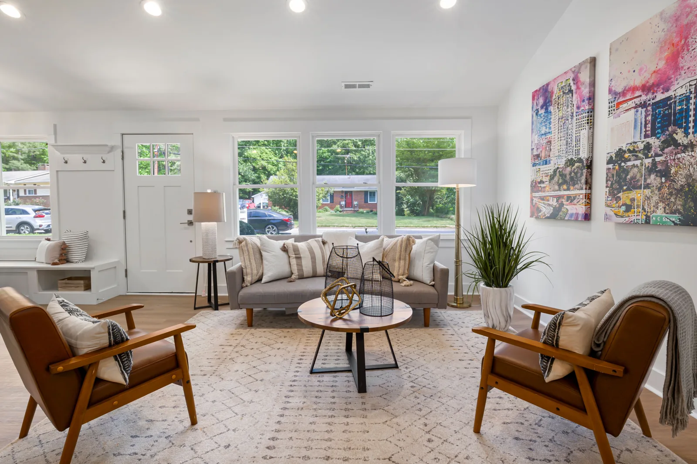
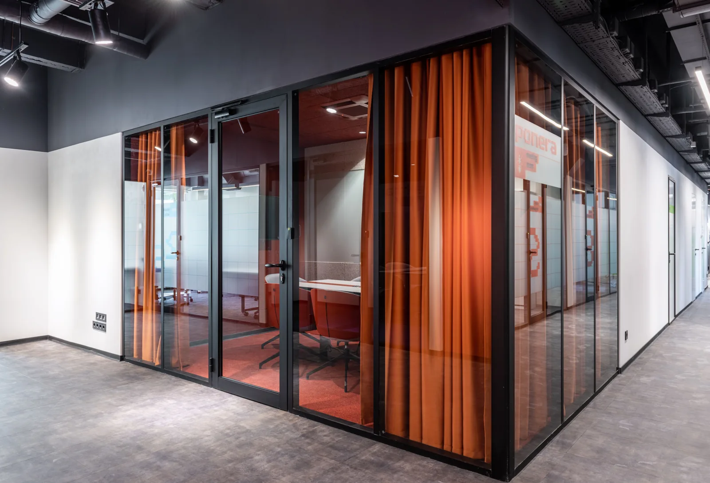
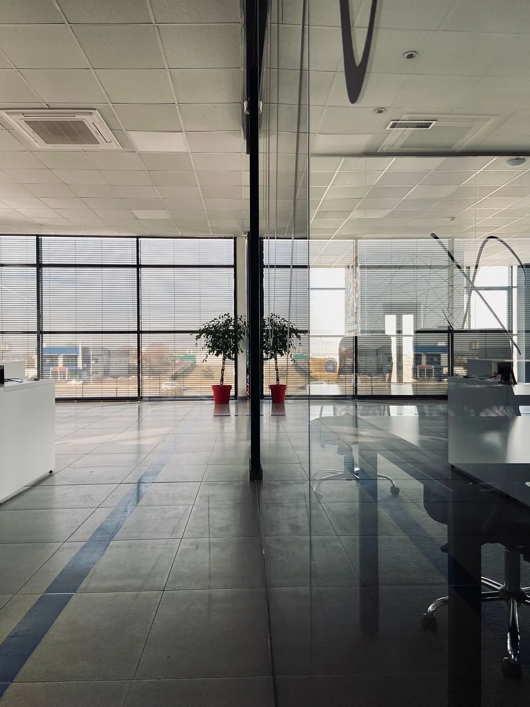

01 EDIFICIOS Y ARQUITECTURA
Vidrio a gran escala
Ventanas y soluciones en vidrio para edificios, proyectos inmobiliarios y espacios de trabajo.
Ver soluciones para edificiosVIDRIOS VECA · LIMA, PERÚ
Ventanas y soluciones en vidrio para edificios, casas y remodelaciones.
Atención de proyectos en toda Lima.
01 SOLUCIONES EN VIDRIO
Desde una ventana que transforma tu casa hasta la fachada de un edificio. Encuentra por dónde empezar.
01 EDIFICIOS Y ARQUITECTURA
Ventanas y soluciones en vidrio para edificios, proyectos inmobiliarios y espacios de trabajo.
Ver soluciones para edificios
02 CASAS Y DEPARTAMENTOS
Más luz en tus ambientes. Exploremos las ventanas y elementos de vidrio que acompañan tu forma de vivir.
Explorar ventanas para el hogar
03 INTERIORES Y REMODELACIÓN
Dale otra perspectiva a lo que ya construiste con vidrio para renovar ambientes y conectar tus espacios.
Ver ideas para remodelar
TU PRÓXIMO PROYECTO
¿Ya tienes un espacio en mente? Reúne estos detalles y dale forma a tu proyecto con Vidrios VECA.
El espacioCasa, edificio o remodelación.
Los detallesFotos y medidas aproximadas.
Tu ideaQué te gustaría transformar.
02 IMAGINA LAS POSIBILIDADES
Un mismo material. Distintas maneras de transformar un espacio.

Edificios y arquitectura corporativa.
Casas, departamentos y remodelaciones.
Vidrio para conectar tus ambientes.
03 SOMOS VIDRIOS VECA
En Vidrios VECA somos una empresa de vidrios con atención en toda Lima. Trabajamos con proyectos de edificios, viviendas y remodelaciones, entendiendo que cada espacio necesita algo diferente.
Nos interesa conocer lo que quieres construir, cómo imaginas el resultado y qué necesita tu proyecto. A partir de ahí, exploramos las posibilidades contigo.
Hagamos espacio para tu ideaPREGUNTAS FRECUENTES
Información para empezar a explorar tus soluciones en vidrio.
Atendemos proyectos en toda Lima: edificios, casas, departamentos y espacios en remodelación.
Puedes consultar por ventanas y elementos de vidrio para vivienda, proyectos inmobiliarios, espacios de trabajo y renovaciones. Cada solución se evalúa según el uso y las condiciones del proyecto.
Reúne fotos del espacio, medidas aproximadas y una breve explicación del cambio que buscas. Si tienes planos o referencias, también ayudan a entender tu idea. Indica la ubicación del proyecto en Lima.
La elección depende de las dimensiones, el uso, el sistema de instalación y las condiciones del ambiente. Las necesidades de seguridad y los requisitos técnicos se revisan para cada proyecto; una fotografía o una medida inicial no sustituye esa evaluación.
04 EL SIGUIENTE PASO
Cuéntanos qué tienes en mente.
Un edificio, tu hogar o un nuevo comienzo.